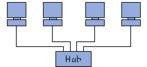
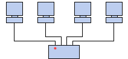

| |
Una rete informatica è costituita da computer collegati fra loro grazie a delle linee di
comunicazione (cavi di rete, ecc.) e degli elementi hardware (schede di rete, nonché altre
apparecchiature che permettono di assicurare la buona circolazione dei dati). L'arrangiamento
fisico, cioè la configurazione spaziale della rete è detto topologia fisica. Solitamente si
distinguono le seguenti topologie :
|
 |
Topologia In Bus:
E' l'organizzazione di rete più semplice. In effetti, in una topologia in bus tutti i computer
sono collegati ad una stessa linea di trasmissione attraverso un cavo, generalmente coassiale.
La parola « bus » designa la linea fisica che collega i terminali di rete.
|
|  |
Topologia In Stella:
I computer della rete sono collegati ad un sistema hardware centrale detto concentratore (in
inglese hub, letteralmente mezzo di ruota). Si tratta di una scatola che comprende un certo
numero di collegamenti nei quali è possibile inserire i cavi di rete dei computer. Quest'ultimo
ha come ruolo di assicurare la comunicazione tra i diversi collegamenti.
|
| |
Topologia ad Anello:
In una rete con una topologia ad anello, i computer sono posti su un cerchio e comunicano
ciascuno al loro turno.
|
|  |
In realtà, in una topologia ad anello, i computer non sono collegati in cerchio, ma ad un
ripartitore (detto MAU,Multistation Access Unit) che gestisce la comunicazione tra i computer a
lui collegati impartendo ad ognuno di essi un intervallo di tempo di parola.
|